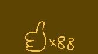
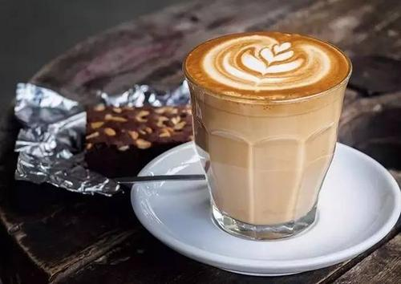

来杯咖啡吗？ |
|

拿铁“拿铁”是意大利文"Latte*的音译，拿铁咖啡拿铁咖啡(6张) 拿铁咖啡(CoffeeL atte)是花式咖啡的一种，是咖啡与牛奶交融 的极至之作。意式拿铁咖啡为纯牛奶加咖啡，美式拿铁则将 部分牛奶替换成奶泡，本地的拿铁多为此种。那句著名 的“我不在咖啡馆，就在去咖啡馆的路上”是一位音乐家在维 也纳说出来的。维也纳的空气里，永远都飘荡着音乐和拿铁 (Latte)咖啡的味道。 |
|
| 版权所有©:陈惠敏 | |